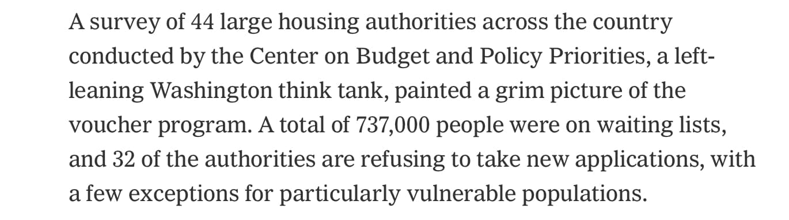

Mobile uploads
Akron has 20,000 people on their housing voucher list.
Democrats don’t actually care about housing.
All this to say: Housing First for homeless people is a total fantasy. Tents and tiny houses are reality.
Oct 15, 2021 10:28:45pm